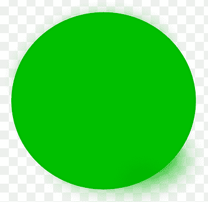
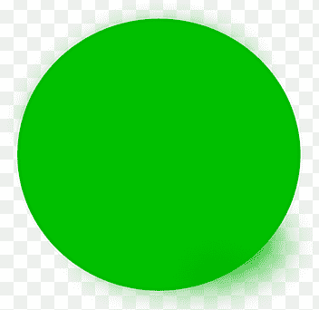

{{ task.name }}
Priority: {% if task.priority == "L" %}
{{ task.get_priority_display }}
{% elif task.priority == "M" %}{{ task.get_priority_display }}
{% elif task.priority == "H" %}{{ task.get_priority_display }}
{% endif %}Deadline: {{ task.deadline }}
Task type: {{ task.task_type }}
Status: {{ task.is_completed|yesno:"Is completed,In progress" }}
{% if task.is_completed %}
 {% else %}

{% endif %}
{% else %}

{% endif %}